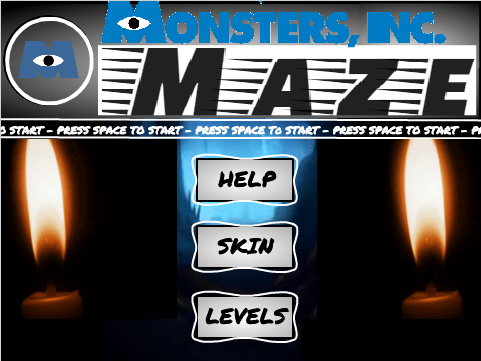
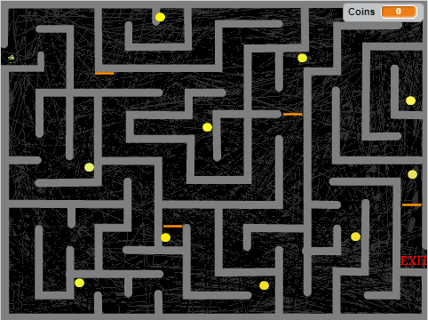
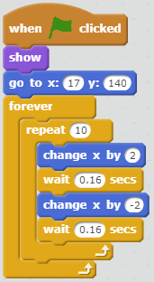

Portfolio
Monsters Inc. Maze
 Click Here to Play Monsters Inc. Maze
Description of Game
The concept behind this game is just a simple maze, but with a
Monsters Inc. theme so it is more enjoyable and interesting for
users. Basically, the main goal of the game is to get the character,
Mike Wazowski to collect as many coins as possible and exit the maze.
The amount of coins collected is basically the scoring system,
where the more coins collected, the higher the score. Randomness
occurs when the x-position of each of the coins are placed and set
within a given range. There were originally supposed to be three levels,
that increased in difficulty, but I only managed enough time to
create two levels. The first level is just a maze, but the second
level gets harder when the orange moving doors are added as obstacles.
It is more difficult because if you touched any of the orange blocks,
you would lose the game. However, if you can reach the exit
with no difficulties, then you would have finished and the game
would be over.
Reflection
This Monsters Inc. Maze game first started out as a normal maze.
Unexpectedly while I was working on my project, I was deciding on
characters that you could choose from. Out of nowhere, I had the idea
of using characters from Monsters Inc., which created the basis for my
game. Two successful points in the development process of my game is
when the character sprite was successfully changed from the choose button
into the actual character and when the end of the maze was correctly coded
to display the "Well Done!" sign. Both these aspects were successful in
making my game work. On the other hand, there were also some difficult
factors that caused some trouble for me. For instance, the green arrows
to navigate between the pages was quite confusing and so were coding
the coins. I was able to get through this difficult coding experience by
slowly reviewing my coding and finding the mistakes that I've made. If
I had more time, I would have changed my game so that there would be more
than two levels. Not only that, but if possible, it would have been nice
if you chould choose Boo or Sullivan as a character and Mike wasn't the
only option, but I didn't have enough time.
Algorithms

An algorithm is a set of step-by-step procedures that contains loops,
conditionals, or mathematical operations. The algorithm above displays
the differents tasks for the sprite to carry out once the flag is clicked.
It also contains a forever loop and a repeat loop. This algoritm works since
after the flag is clicked, it goes to the correct position and shows itself.
From there, it would continously repeat going to the right a little, waiting
a short bit, going to the left a bit, and waiting again, forever. This overall
gives the sprite a back and forth stuttering motion.